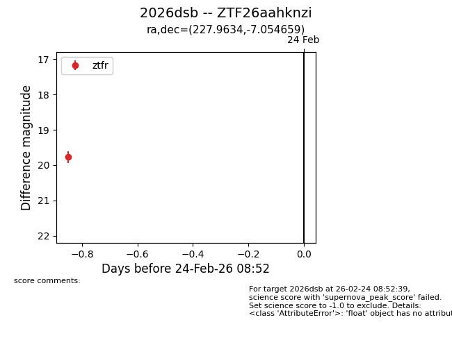
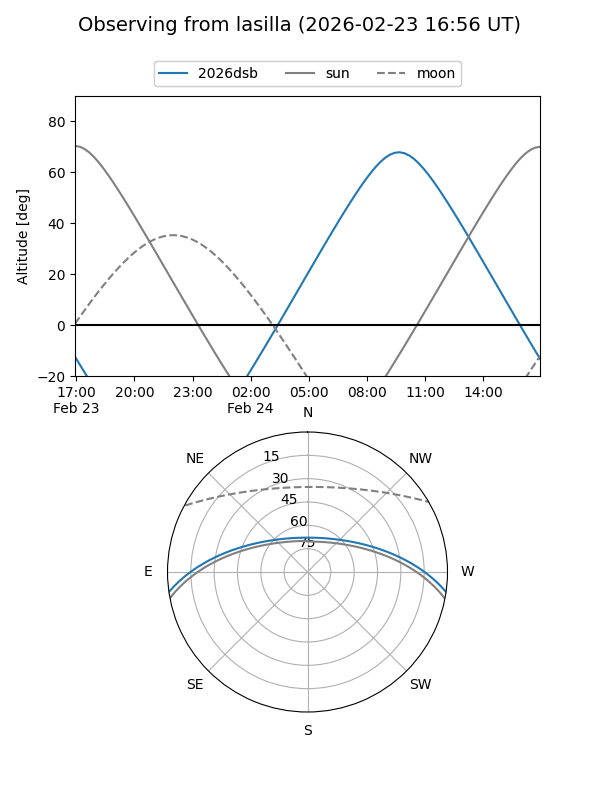
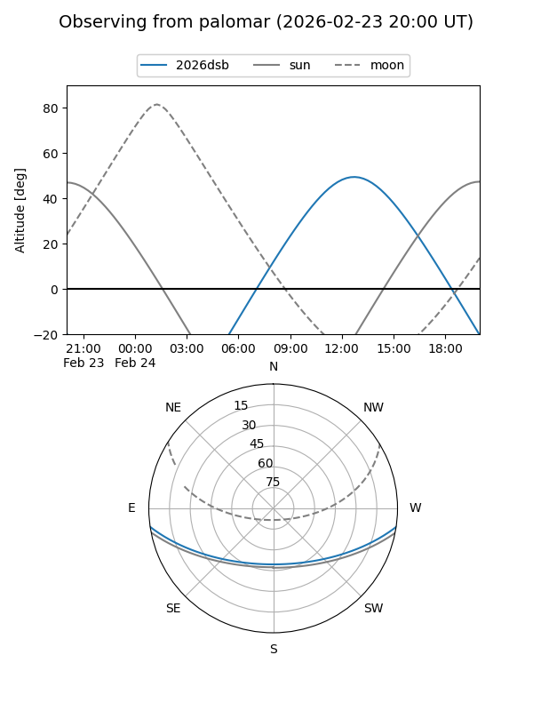

2026dsb
Target 2026dsb at 2026-02-24 09:08
Aliases and brokers:
FINK: link
Lasair: link
ALeRCE: link
TNS: link
YSE: link
alt names
ZTF26aahknzi (ztf,fink_ztf)
2026dsb (tns,yse)
Coordinates:
equatorial (ra, dec) = 227.9634,-7.05466
equatorial (HMS+DMS) = 15:11:51.21,-07:03:16.77
galactic (l, b) = (352.8939,+41.80474)
Flags:
Photometry:
last ztfr=19.77
1 ztfr detections
Lightcurve

Visibility


Additional plots